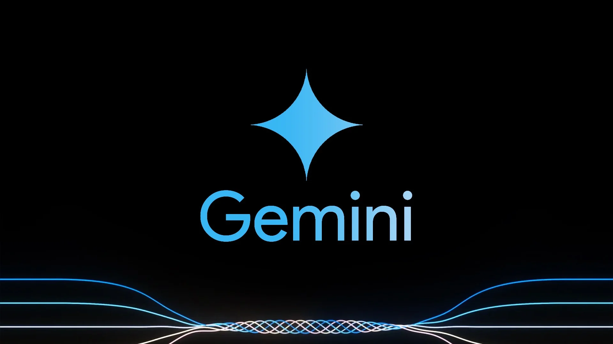

Gemini Live: assistente do Google ganha modo de voz em português; veja como funciona
Postado 04 outubro 2024  Recurso permite ter conversa mais fluida com o robô e permite interromper, mudar de assunto e se aprofundar em um tema a qualquer momento do bate-papo. Novidade está disponível para quem assina a versão paga da ferramenta. Leia maisO serviço de internet da Amazon que quer competir com empresa de Elon Musk
Postado 04 outubro 2024 O Projeto Kuiper usará milhares de pequenos satélites que operam em movimentos coordenados no
espaço, assim como a Starlink. Serviço da Amazon chegará à América Latina em meados de 2025.
Leia mais
O Projeto Kuiper usará milhares de pequenos satélites que operam em movimentos coordenados no
espaço, assim como a Starlink. Serviço da Amazon chegará à América Latina em meados de 2025.
Leia mais
Todos os direitos reservados